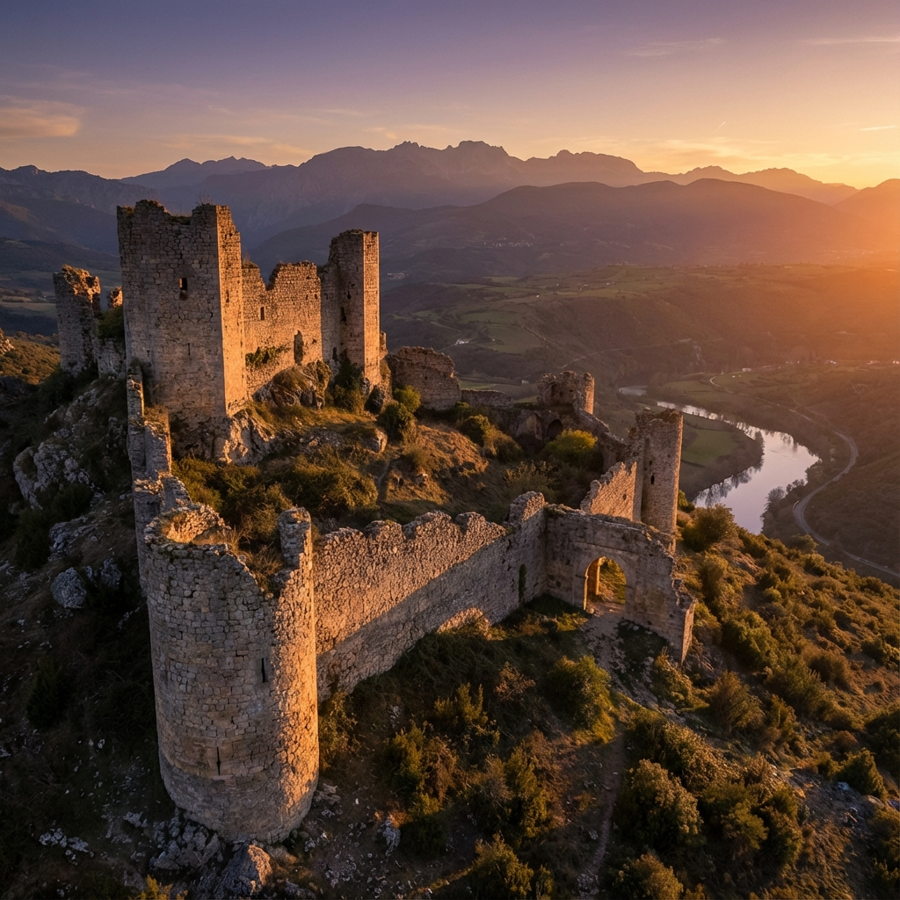

El Castillo de Cerezo
El castillo de Cerezo de Río Tirón fue una de las plazas fuertes más importantes del condado. Situado estratégicamente sobre el cerro que domina el río Tirón, sus murallas protegieron la frontera castellana durante siglos.

Murallas

Vistas

Puentes

Iglesias
Torres
Iglesias y Ermitas
El románico dejó una huella imborrable en nuestra tierra. Desde la iglesia de Santa María hasta las ermitas dispersas por el alfoz, la arquitectura religiosa nos habla de la fe y la vida social de nuestros antepasados.